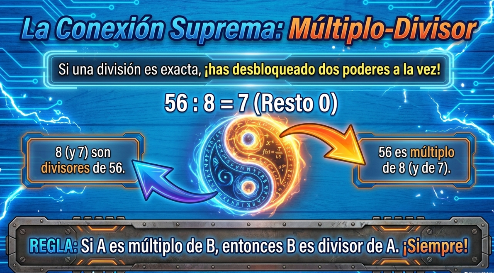
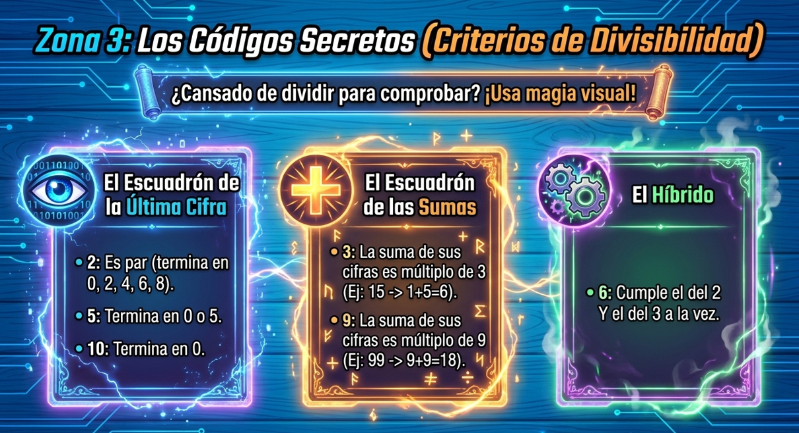
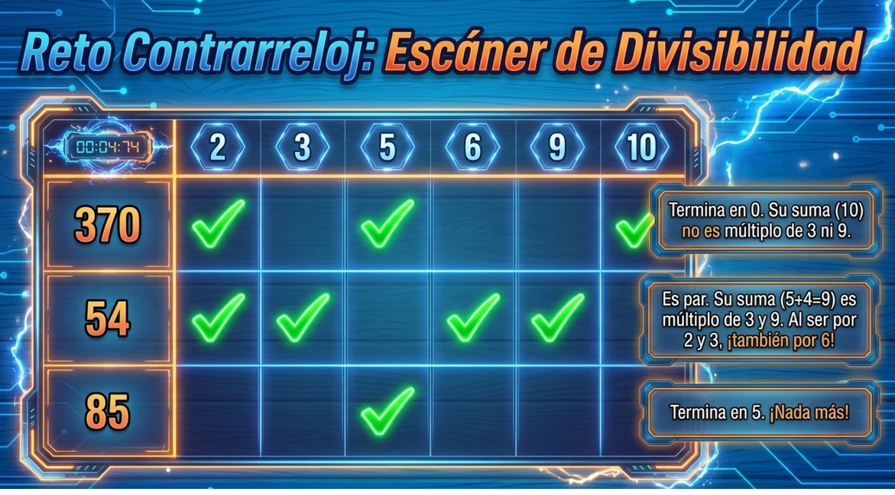
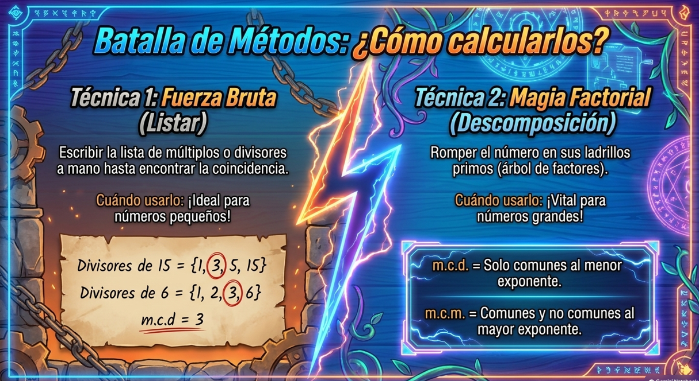
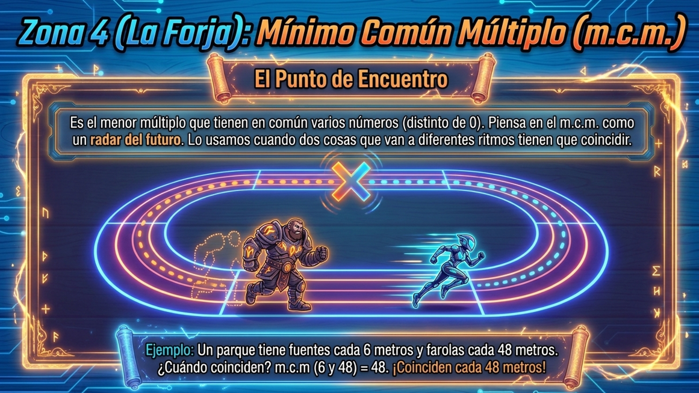
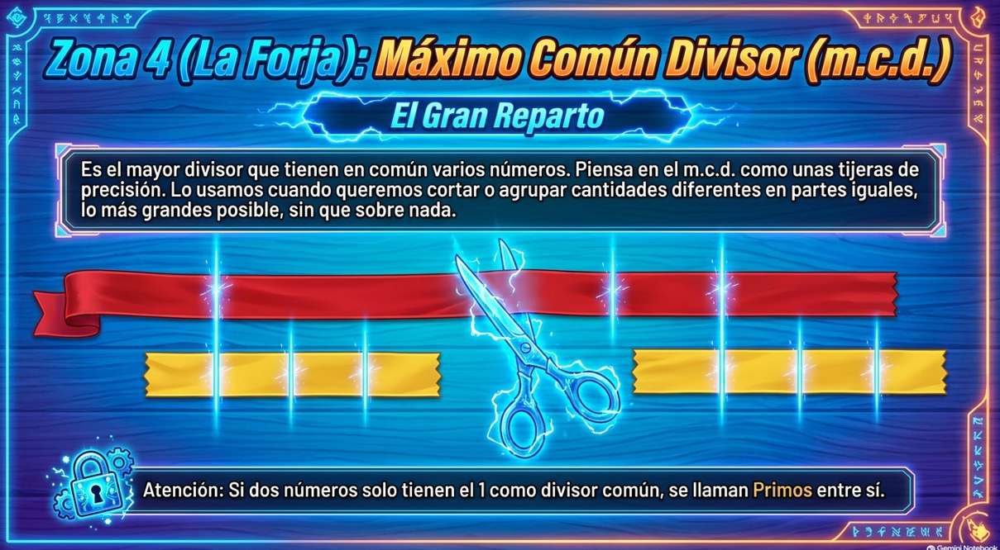
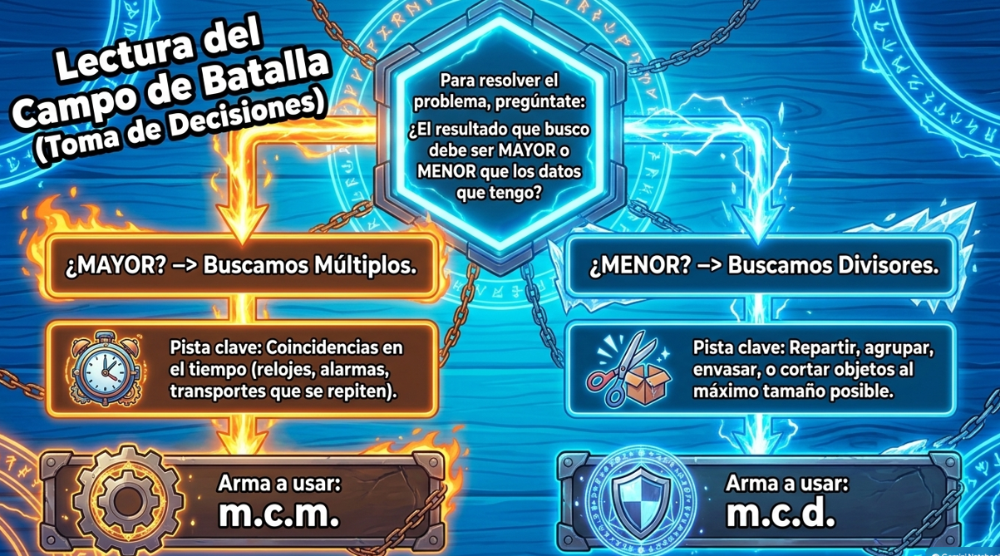

Observa la imagen superior. Si la división 56 : 8 = 7 es exacta (resto 0), ¿cuál de las siguientes opciones expresa correctamente la relación entre sus números?
Las botellas de agua se comercializan en cajas de 6 unidades. ¿Cuál de las siguientes opciones de cantidad NO se puede comprar en cajas completas?
Un número b es divisor de otro número a cuando la división a : b resulta ser...
¿Cuál de las siguientes afirmaciones sobre los divisores de cualquier número natural n es cierta?
En una papelería se venden archivadores a 4 € cada uno. ¿Es posible obtener una recaudación exacta de 245 €?


¿Qué grupo de criterios pertenece al 'Escuadrón de la Última Cifra'?
¿Qué condición debe cumplir la suma de los dígitos de un número para ser divisible entre 3 y entre 9?
¿Qué requisitos debe verificar un número para ser divisible por 6?
Observa el tablero del escáner visual. ¿Por cuáles de los siguientes números es divisible el 54?
En el número 37_ ¿qué cifra colocas en el hueco para que resulte divisible por 2 y por 3 a la vez?

Dada la secuencia: 11, 15, 19, 21, ¿cuáles son Números Primos?
¿Cuál de las siguientes listas contiene TODOS los divisores del número 18?
Sin calcular todos sus divisores, ¿cómo demostramos que 140 es un número compuesto?
¿Cuál es la descomposición en factores primos del número 36?
¿Existe algún número par que sea NÚMERO PRIMO?


Calcula el Mínimo Común Múltiplo (m.c.m.) de 4 y 6 comprobando sus múltiplos:
Calcula el Máximo Común Divisor (m.c.d.) de 12 y 18 comprobando sus divisores:
Sabiendo que 20 = 2² x 5 y 30 = 2 x 3 x 5, aplica la regla del m.c.m. (factores comunes y no comunes al mayor exponente):
Sabiendo que 12 = 2² x 3 y 18 = 2 x 3², aplica la regla del m.c.d. (factores comunes al menor exponente):
Los números 8 (2³) y 15 (3 x 5) no tienen factores primos comunes. ¿Cuál es su m.c.d.?

"Dos luces parpadean: una cada 6 s y otra cada 10 s. ¿Cuándo volverán a coincidir?" ¿Qué herramienta debes emplear?
"Un carpintero quiere cortar listones de 24 cm y 36 cm en trozos iguales lo más largos posible sin desperdiciar nada." ¿Qué cálculo debes aplicar?
Al resolver un problema utilizando el Mínimo Común Múltiplo, ¿cómo es el resultado obtenido respecto a los números de partida?
Al resolver un problema utilizando el Máximo Común Divisor, ¿cómo es el resultado obtenido respecto a los números de partida?
¿Qué enunciado indica sin duda que debemos utilizar el **m.c.d.**?
Una florista tiene 12 rosas rojas y 16 claveles blancos. Quiere hacer ramos iguales con el mayor número de flores posible sin mezclar. ¿Cuántas flores tendrá cada ramo?
Julio toma un jarabe cada 8 horas y una pastilla cada 12 horas. Si se tomó ambos medicamentos a las 8:00 AM de hoy, ¿a qué hora volverá a coincidir la toma?
Un semáforo se pone en rojo cada 36 s y otro cada 20 s. Si acaban de coincidir en rojo, ¿cuántos minutos pasarán como mínimo para volver a coincidir?
A un campamento acuden 60 estudiantes. Tienen que distribuirse en tiendas con el mismo número de personas. ¿Cuál de los siguientes tamaños de grupo es IMPOSIBLE sin dejar a nadie fuera?
Paula tiene 40 piezas amarillas y 25 azules. Quiere construir torres del mismo color y con el mismo número de piezas en cada una. Si quiere que sean lo más altas posible, ¿cuántas piezas tendrá cada torre?
¡Enhorabuena, Explorador Supremo!
Has completado con éxito los 30 ejercicios de la unidad. Has demostrado un dominio absoluto de múltiplos, divisores, criterios visuales, números primos, descomposición factorial y resolución de problemas con m.c.m. y m.c.d.